Generating an EMF Model
Summary
This tutorial is a step-by-step description of the process of
creating an EMF model and generating a simple model editor for it.
Following this tutorial will show how easy EMF makes it to go from
a simple model definition to a fully functioning editor for that
model.
The screenshots are based on version 3.0M9 of the Eclipse SDK and
version 2.0.0 (build I200405200923) of the combined EMF, SDO, XSD SDKs.
The model we will generate looks like this in UML (see the
Eclipse Modeling Framework Overview paper for a description of
this model):

We will show how an EMF model can be generated from either of
two different sources: a Rational Rose model or a set of annotated
Java interfaces and classes.
Last update: May 31, 2004.
Contents
contents
Step 0: Prerequisites
The EMF Runtime package includes the EMF generator and a number
of related plugins. After installing the package, verify that they
are available in your Eclipse environment:
- Bring up the "Help/About Eclipse Platform" dialog.

- Click on "Plug-in Details".

- Check that the set of plugins (highlighted in blue) are present. If you also installed SDO, you will have the plugins highlighted in green. XSD plugins are highlighted in pink.

contents
Step 1a: Import the Model from Rose
The Rose file for the library model can be found here: library.mdl. Save it
somewhere on your workstation.
Create a new Ecore model project in the workspace:
- Bring up the "File/New/Project..." dialog (by hitting CTRL-N or one of the following two ways:
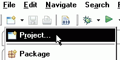 or
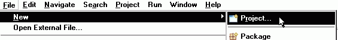
- Select "Eclipse Modeling Framework" and "EMF Project". Click
the "Next" button.

- Give the project a name, say, "library". Then, click the "Next"
button.
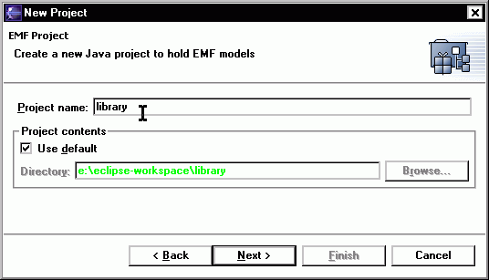
- Select "Load from a Rose class model" and click the "Next"
button.

- Click on the "Browse" button and locate the Rose model
file. The Rose model file will be examined, and a default GenModel
name will be suggested. You can change the name in the entry box if
you wish.
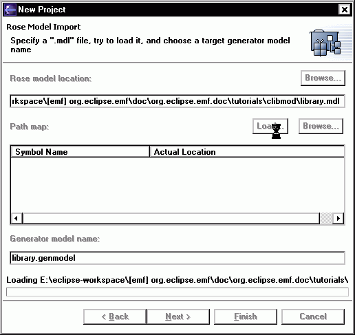
- Then click the "Next" button.
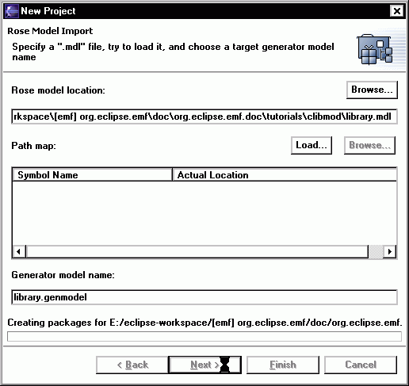
- In general, a Rose model may contain more than one package.
Select the package for which you want to generate an EMF model --
in this case, the only package, "library". Click the "Finish"
button.
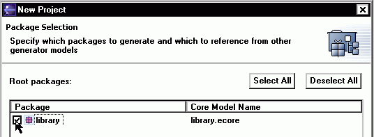
- An Ecore model and a GenModel will be created. The GenModel,
which controls code generation for the model, is opened in the main
view (initally collapsed, this is how it looks fully expanded).
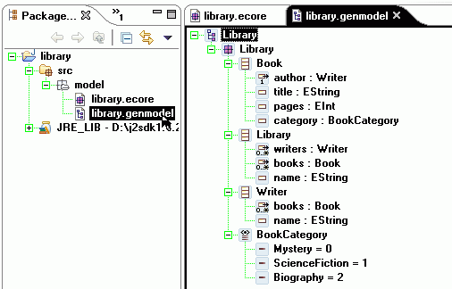
- The Ecore model looks like this when fully expanded:
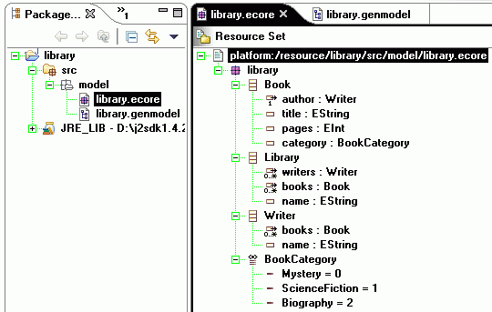
contents
Step 1b: Define the Model Using Annotated Java
Instead of importing the model from a Rose diagram, we can start
with a set of Java interfaces and classes that correspond to the
classes and enumerated types, respectively, in the library model.
This code is the bare minimum required to illustrate the desired
features. Based on it, an Ecore model and a GenModel will be
constructed, which will then drive generation of the remaining
code. The code is annotated with "@model" tags in Javadoc comments,
in order to specify any non-default values for the attributes and
references of the Ecore objects.
Library.java
package org.eclipse.example.library;
import java.util.List;
/**
* @model
*/
public interface Library
{
/**
* @model type="Book" containment="true"
*/
List getBooks();
/**
* @model type="Writer" containment="true"
*/
List getWriters();
/**
* @model
*/
String getName();
}
|
Book.java
package org.eclipse.example.library;
/**
* @model
*/
public interface Book
{
/**
* @model
*/
String getTitle();
/**
* @model default="100"
*/
int getPages();
/**
* @model opposite="books"
*/
Writer getAuthor();
/**
* @model
*/
BookCategory getCategory();
}
|
Writer.java
package org.eclipse.example.library;
/**
* @model
*/
public interface Writer
{
/**
* @model
*/
String getName();
/**
* @model type="Book" opposite="author"
*/
java.util.List getBooks();
}
|
BookCategory.java
package org.eclipse.example.library;
/**
* @model
*/
public class BookCategory
{
/**
* @model name="Mystery"
*/
public static final int MYSTERY = 0;
/**
* @model name="ScienceFiction"
*/
public static final int SCIENCE_FICTION = 1;
/**
* @model name="Biography"
*/
public static final int BIOGRAPHY = 2;
}
|
Create a new Java project in the workspace:
- Bring up the "File/New/Project..." dialog (by hitting CTRL-N or one of the following two ways:
or
- Select "Java" and "Java Project". Click the "Next"
button.

- Give the project a name, say, "library2". Make sure you check the radio button for "Create separate source and output folders". By default, this creates a src/ and a bin/ folder within your project folder. Then, click the "Next"
button.
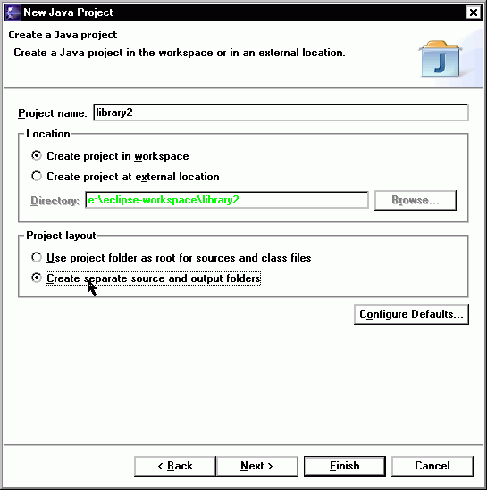
- Specify "library/runtime" as the build default output folder.
Click the "Finish" button.
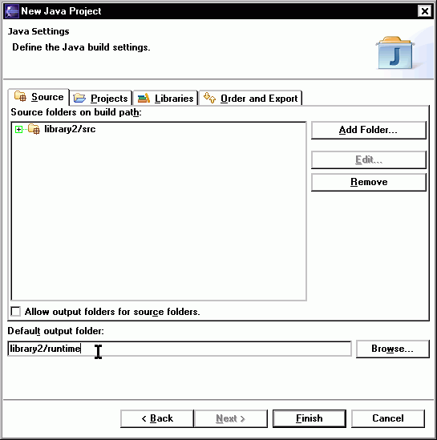
- The newly created Java project can be seen in the Package
Explorer.
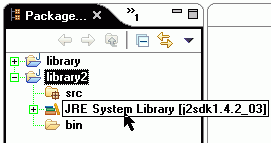
Create the first Java interface:
- Right-click the "src" folder and select "New/Interface" from
the pop-up menu.
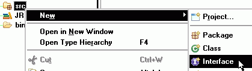
- Fill in the package and interface name. Click the "Finish"
button.
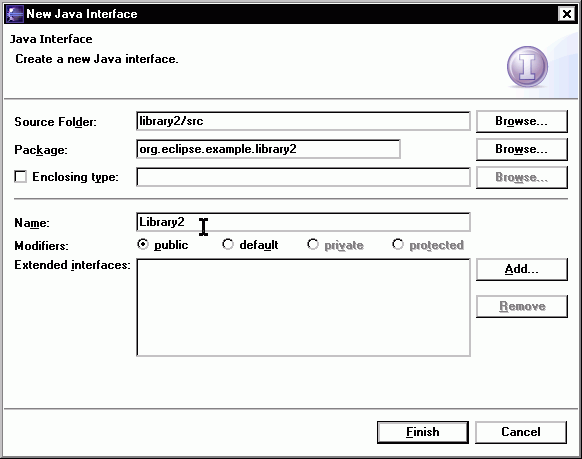
- A new Java interface file is created and opened in the main
view.
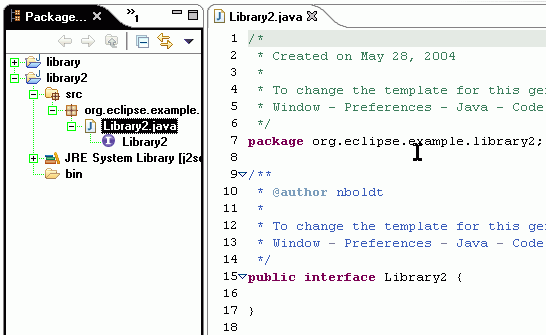
- Type (or paste) in the interface code, as shown above. Pay special attention to the "@model" tags. Right-click code and select "Save", or select "Save" from the "File" menu. Or, you can use CTRL-X-S to save.
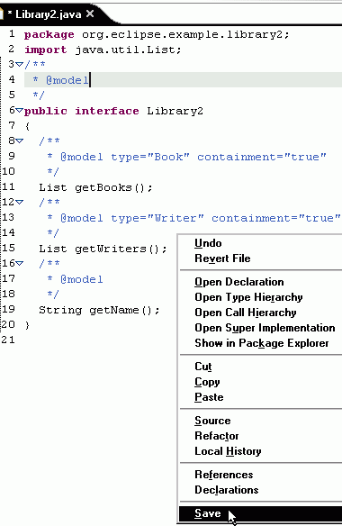
- Repeat the above steps for creating the other two interfaces, Book.java and Writer.java, and the BookCategory.java class in the same way.
Of course, to create the class, select "New/Class" from the pop-up
menu, instead of "New/Interface". You can use CTRL-X, S to Save All open edited documents.
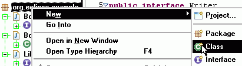
- Note also that if you right-click the package under the src folder, the wizard will prefill with that value so you don't need to enter it manually - only the Interface or Class name.
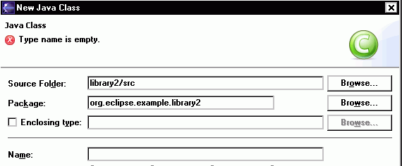
- When done, you should have this:
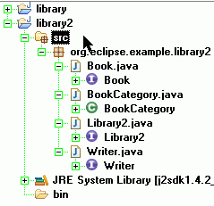
Create the GenModel:
- In the Package Explorer view, right-click the "src" folder and
select "New/Other..." from the pop-up menu (or just hit CTRL-N). Select "Eclipse Modeling Framework" and "EMF Models". Click the
"Next" button.

- Change the folder to "library/src/model", and the file name to "library.genmodel" and click the "Next"
button.
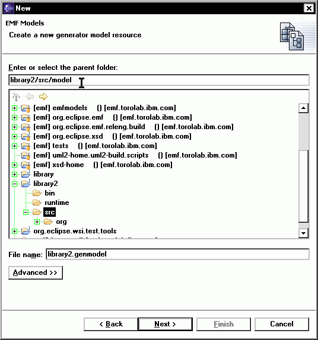
- Select "Load from Java annotations" and click the "Next"
button.

- Select library package and click the "Finish" button.
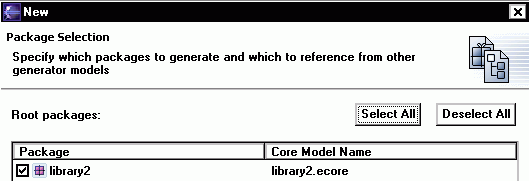
- An Ecore model and a GenModel will be created. The GenModel,
which controls code generation for the model, is opened in the main
view.
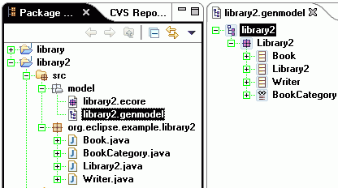
contents
Step 2: Generate the EMF Model Code
The GenModel shows a root object, representing the the whole
model. The model object has children that represent its packages,
whose children then represent classifiers (classes and datatypes,
including enumerated types). The children of classes are class
attributes, references, and operations; the children of enumerated
types are enum literals.
- The GenModel can be expanded to see its various elements.
- There are properties associated with each object. If the
Properties view isn't already showing, right-click and select "Show Properties View", or bring up "Window/Show
View/Other..."
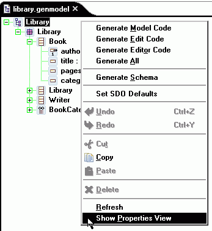 or
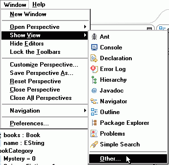
- Expand the "Basic" set of views and choose "Properties".
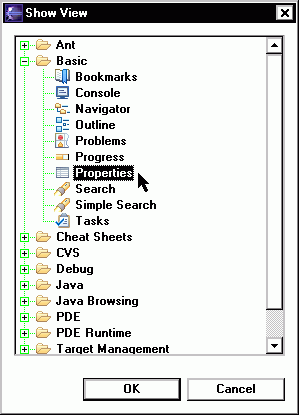
- These properties control the behavior of the code
generator.
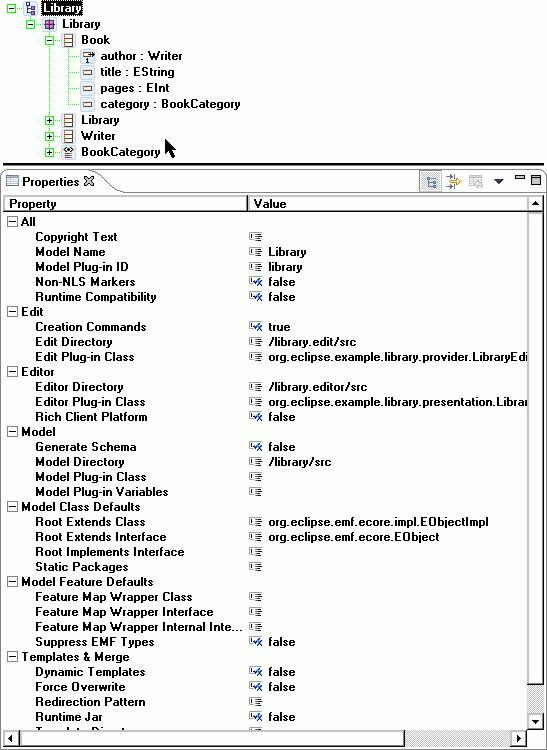
- Depending on preference, you can show them in diffent ways (tree or flat).
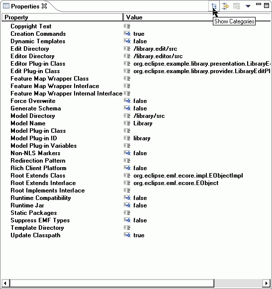
In most cases, the properties need not be changed from their
default values, but these options can provide a great deal of
control over the code that gets generated. This topic will be
explored more fully in future tutorial material; for now, select
several different GenModel objects, and observe their
properties.
The GenModel is also the place where you initiate the code
generation. By right-clicking on an object in the model, you can
generate code for it.
- Right-click the "library" model object and select "Generate
Model Code" from the pop-up menu. Observe the generated files.

After generation, the class interfaces and enum class will have
been created (if the model was imported from Rose) or completed (if
the model was defined using annotated Java), and a new pair of
interfaces will have been created for the package itself and for
the factory. There will also be two new packages, with "impl" and
"util" suffixes, which contain implementations of the interfaces
and additional utility classes, and a "plugin.xml" manifest file
for the model plugin.
If you define the model by using annotated Java, after
generating code by selecting "Generate Model Code" pop-up menu, you
may see the warning message "The import java.util.List is never
used". This message is ok for you to continue to work on next
step (this warning used to appear in EMF 1.1 with Eclipse 2.1).
If you change the model, you can regenerate it, and changes will
be merged with any hand modifications that may have been made to
the code. You can also selectively generate a subset of the model
code by right-clicking on a package, class, or enum object and
selecting "Generate Model Code" from the pop-up menu.
contents
Step 3: Generate an Editor for the Model
A fully functional Eclipse editor can also be generated for any
model. By default, it is split between two plugins: an "edit"
plugin includes adapters that provide a structured view and perform
command-based editing of the model objects; an "editor" plugin
provides the UI for the editor and wizard.
- In the GenModel, right-click the "Library" model object and
select "Generate Edit Code" from the pop-up menu, then repeat for "Generate Editor Code". Alternatively, you can also select "Generate All" to generate the model (again), edit, and editor code.
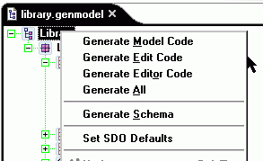
- Observe the generated projects, with "edit" and "editor"
suffixes. (In this workspace screenshot, library.* projects were based on importing a Rose model (Step 1a), and library2.* projects were based on annotated java (Step 1b), above.)
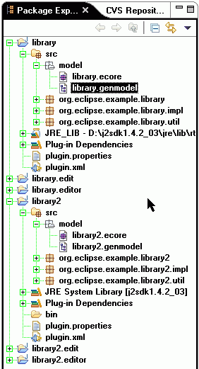
In general, if you wish to generate the model, edit, and editor
plugins in a single step, you can do so by selecting "Generate All"
from the pop-up menu.
The code should be compiled automatically as it is generated,
and should recompile whenever it is changed. If you have disabled
automatic building in the workbench preferences, you can initiate
compilation manually:
- Select "Rebuild All" from the "Project" menu.
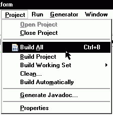
- There should no errors in the "library", "library.edit", and
"library.editor" projects if you import the model from Rose.
- There should be one warning message your projects if you define the model using
Annotated Java.
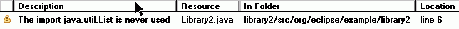
- This is due to the fact that the generated code will add import org.eclipse.emf.common.util.EList; into your imports, but will NOT remove the unused import java.util.List;. You will also notice that the return type of the generated code is EList, not List. To remove this warning, simply select "Organize Imports" from the "Source" menu, or hit CTRL-SHIFT-O. You can also right-click a package or file and "Orgainise Imports" on that file (or group of files).
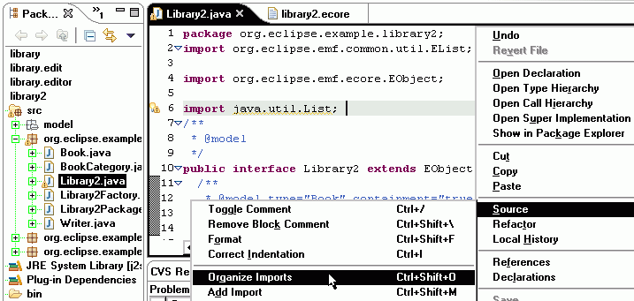
contents
Step 4: Run the Generated Editor
In order to run plugins in a runtime workbench, a lunch
configuration must first be set up:
- Select "Run..." from the "Run" menu.
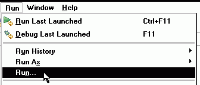
- Select "Run-time Workbench" and click the "New" button. You can name your new configuration something meaningful.
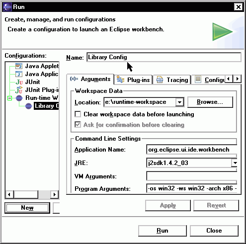
- Then, switch to the "Plug-ins"
tab. Pick "Choose plugin-ins and fragments to launch from the list",
and then select the top-level "External Plug-ins".
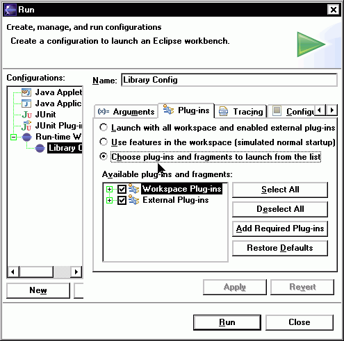
- Switch to the "Common" tab, select "Display in favorites menu:
Run". You may want to change the configuration's name to something
more recognizable. Click the "Apply" button.
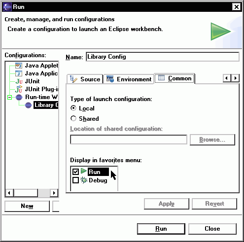
A runtime workbench can be launched from the "Launch
Configurations" dialog by clicking on the "Run" button. Once the
launch configuration has been set up, it can also be launched from
the "Run" button on the toolbar.
- Select the new launch configuration from the "Run" button
drop-down.
 or
or 
- Wait for a second instance of the Eclipse platform to come up.
Bring up the "Help/About Eclipse Platform" dialog, click on the
"Plug-in Details" button, and verify that the generated plugins are
there.
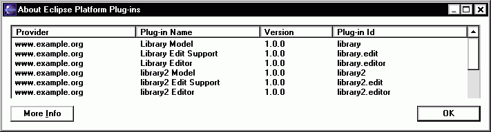
The library model wizard can now be used to create a new
instance of the model.
- Bring up the "File/New/Project..." dialog.

- Select "Simple" and "Project". Click the "Next" button.
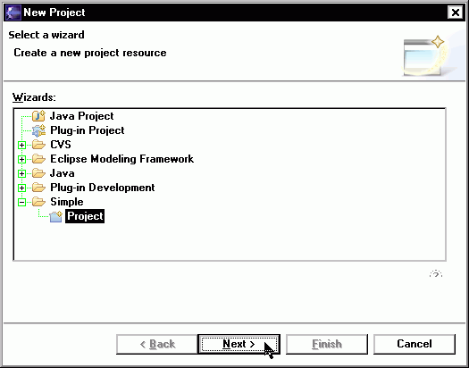
- Give the project a name and click the "Finish" button.
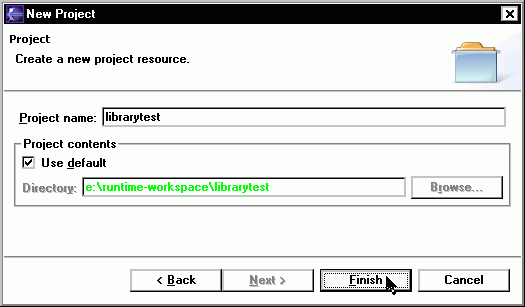
- Right-click the project and select "New/Other..." from the
pop-up menu (or CTRL-N). Select "Example EMF Model Creation Wizards" and "Library
Model" (Rose model import, from Step 1a) or "Library2 Model" (annotated java, from Step 1b). Click the "Next" button.
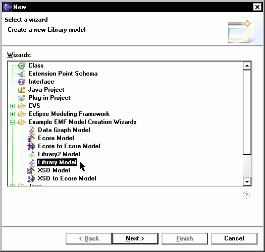
- Enter a file name for the library model. Make sure it ends with
a ".library" extension. Then click the "Next" button.
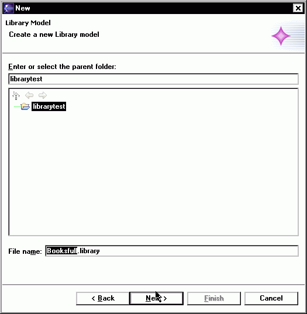
- Select "Library" as the model object, and your preferred XML encoding (UTF-8 is the default). Click the "Finish"
button.
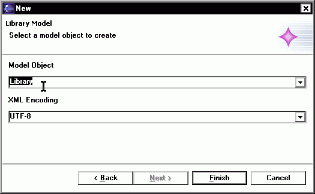
- The newly created library model is opened in the main
view. (To display the Properties view, right-click in the main view and select "Show Properties View.")
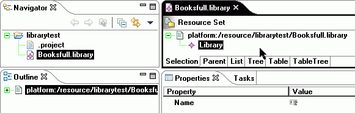
The root object in this editor corresponds to the "My.library"
resource. Under it lies a single library, the object which was
selected as the model object in the wizard.
contents